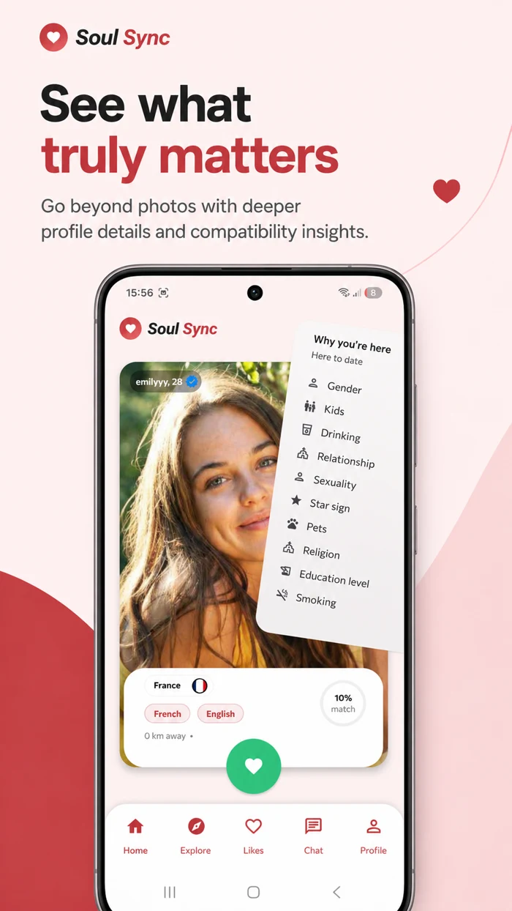
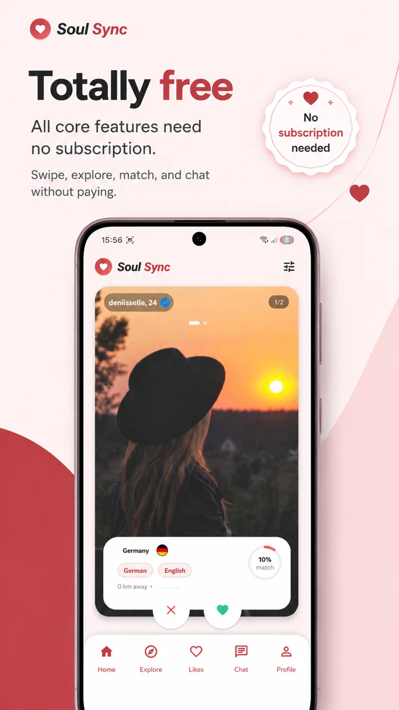
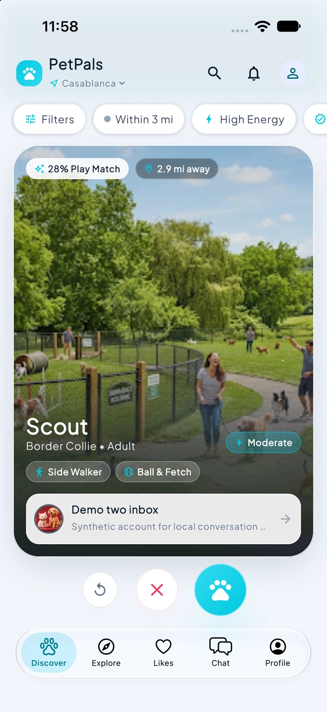
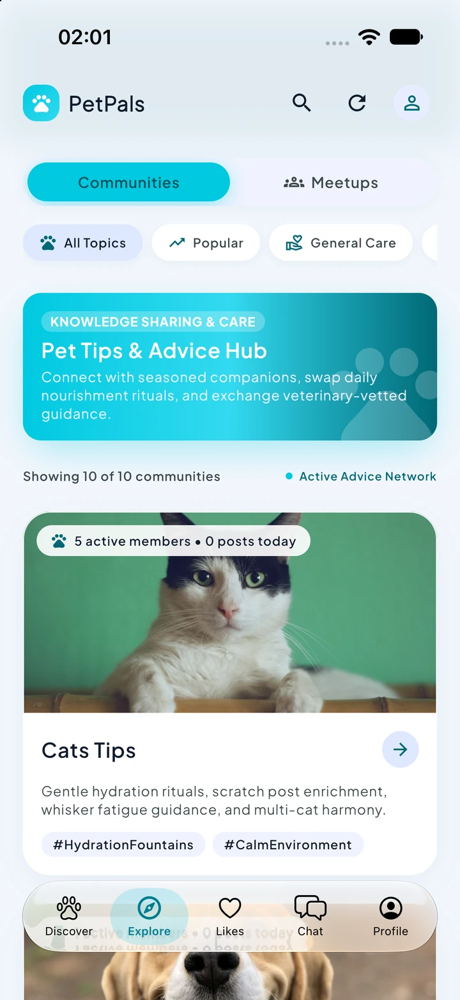

PERSONAL SIDE PROJECTSoulSyncConnection, with more meaning.

✳SoulSync
AndroidA dating app built around compatibility, richer profiles, and real conversations. Discover nearby people, compare shared interests, and connect through chat.
I’m Abdallah, an Android Developer at stadtraum GmbH. Alongside my professional work, I explore Kotlin Multiplatform through personal side projects.


Android ✳ Kotlin ✳ Jetpack Compose ✳ Kotlin Multiplatform ✳ Firebase
Professional Android experience,
client work, and personal side projects.

✳A dating app built around compatibility, richer profiles, and real conversations. Discover nearby people, compare shared interests, and connect through chat.

✳A social space for pets and their people. My Kotlin Multiplatform side project brings nearby discovery, communities, and playdates to an Android & iOS experience.
I work remotely as an Android Developer for stadtraum GmbH, a German company. Outside my professional work, I develop SoulSync for native Android and explore Kotlin Multiplatform and iOS through personal side projects such as PetPals.
Developed Android applications across hospitality, delivery, services, and social experiences: Gloo Gloo, Number 10, Illico, and Elige. Work included Kotlin, MVVM, Retrofit, social authentication, Google Maps, and Stripe integration.
Delivered Android TV software for clinic waiting rooms, login features and bug fixes for Wish2, and IPTV streaming applications. Worked with Firebase, authentication, push notifications, background tasks, and API integration.
I care about how an app works.
And how it feels to use.
I’m Abdallah Id Lahcen, an Android Developer based in Morocco, working remotely for stadtraum GmbH in Germany. My professional background spans native Android and client applications. In my spare time, I explore Kotlin Multiplatform and iOS through personal side projects.
I enjoy turning a complex problem into something clear and useful. Whether working independently or with a team, I bring curiosity, organization, and a hands-on approach to building.
Specialized Institute of Applied Technology · 2017–2019
Associate’s degree · 2013–2015
Kotlin · Java · Jetpack Compose
Android SDK · Kotlin Multiplatform
MVVM · Hilt · Flow · LiveData
Retrofit · Room · SQLite
Firebase · Authentication
Push notifications · Maps · Stripe
Have a mobile app in mind, or a team I could contribute to?
abdallah.idlahcen2@gmail.com